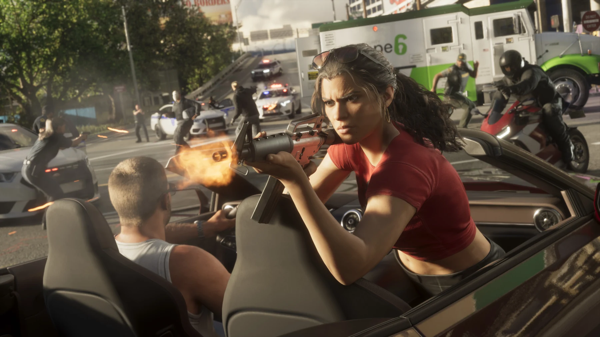
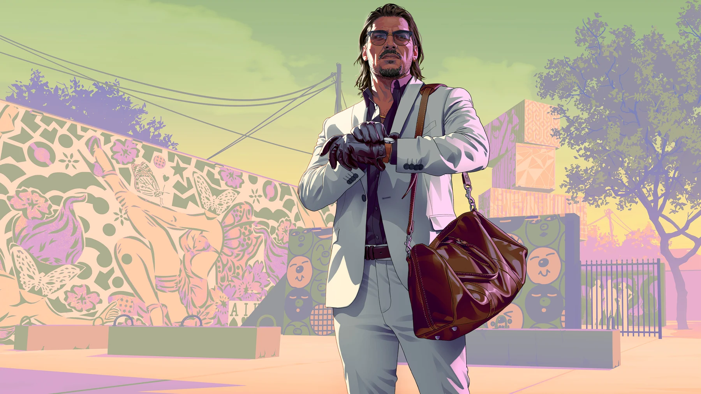
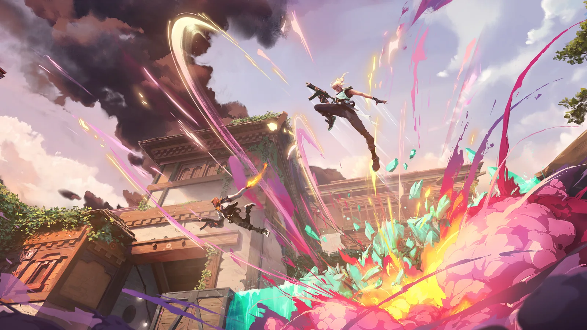
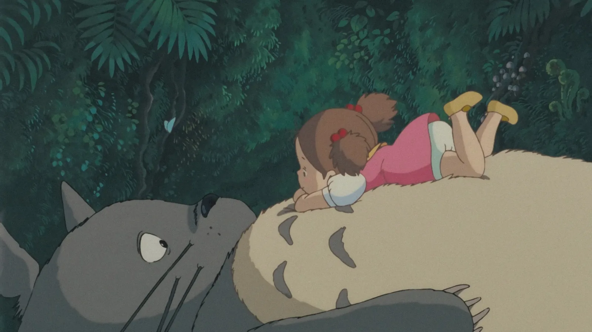
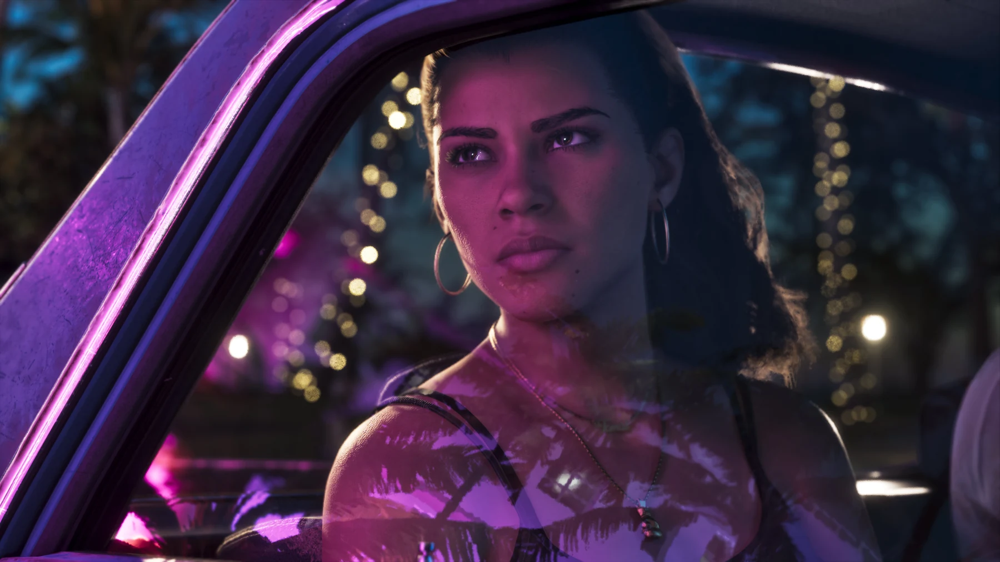
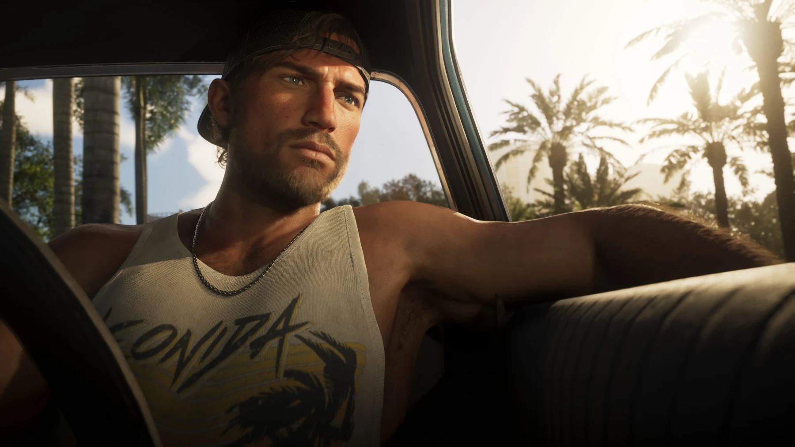

GTA VI
Waink It en GTA VI: cómo escanear coches y leer sus datos
Waink It muestra modelo, alarma, cierre, rastreador, estado y opciones de venta o registro de los coches.
La espera terminó. Esto es lo confirmado sobre el nuevo mundo de Rockstar y cómo orientarte entre los datos oficiales y las dudas que aún quedan.
Leer artículo REPORTAJE PRINCIPAL 01 / 06
REPORTAJE PRINCIPAL 01 / 06Waink It muestra modelo, alarma, cierre, rastreador, estado y opciones de venta o registro de los coches.

Qué observan los primeros análisis en GTA VI: gimnasios, paseos, conversaciones y actividad social.

Cómo desplazarte rápido en GTA VI con taxis y transporte público, qué servicios requieren ir a una parada y cuándo puedes saltar el trayecto.
12 artículos recientes para seguir lo que pasa en videojuegos, anime y cultura digital.
Waink It muestra modelo, alarma, cierre, rastreador, estado y opciones de venta o registro de los coches.
Qué observan los primeros análisis en GTA VI: gimnasios, paseos, conversaciones y actividad social.
Cómo desplazarte rápido en GTA VI con taxis y transporte público, qué servicios requieren ir a una parada y cuándo puedes saltar el trayecto.

Guía para vender coches: qué puede comprar Pay 'n' Spray, Moses o Randy y cuándo registrar un vehículo para conservarlo.

Qué vehículos se asocian a la Ultimate Edition de GTA VI y cómo separar un extra de edición del catálogo general.
La Snap Gun abre puertas cerradas sin romperlas. Te contamos el progreso de historia que la desbloquea.

Qué cambia al robar coches: entradas ruidosas, coches keyless, alarmas y herramientas que se consiguen al avanzar.
GTA VI no incluye un menú de repetición de misiones en su versión de lanzamiento. Te explicamos el papel de los guardados manuales.

Los análisis observan redes, fama y teléfonos en GTA VI. Separa la crítica cultural de funciones aún no confirmadas.

Quiénes son Bae-Luxe y Roxy: su amistad, música y estrategia de viralidad en GTA VI.

Rockstar presenta a Raul Bautista como atracador experimentado que busca aliados para golpes arriesgados.

GTA VI no ofrece un modo completo en primera persona como ajuste de cámara. Separa las vistas puntuales de los glitches reportados.
10 recomendaciones editoriales; el orden no representa métricas de visitas.

Qué se sabe del mapa de GTA VI tras el lanzamiento: Vice City, Leonida Keys, Port Gellhorn, Ambrosia, Grassrivers y Mount Kalaga.

Una selección editorial de juegos de PS5 con estilos distintos y motivos concretos para recomendarlos.

Una guía editorial de series destacadas, sin atribuir puntuaciones o un ranking oficial a Crunchyroll.

Juegos free-to-play recomendables y una guía clara sobre temporadas, compras opcionales y acceso online.

Una guía práctica para elegir gráfica, procesador, memoria y monitor según resolución, juegos y presupuesto.

Recomendaciones para principiantes organizadas por duración, género y tipo de historia, con opciones fáciles de probar.

Ocho juegos de terror con enfoques distintos, desde supervivencia y exploración hasta multijugador cooperativo.

Recomendaciones para Xbox Series X|S y el ecosistema Xbox, con estilos variados y recordatorio de comprobar plataforma y catálogo.
Una selección editorial de anime de acción, desde fantasía y superpoderes hasta samuráis y ciencia ficción.

Una guía para entender los easter eggs, descubrir secretos con paciencia y comprobar si un hallazgo está confirmado o es un rumor.
GTA VI ya recorre Leonida. Descubre los detalles confirmados, personajes, mapa, vehículos, secretos y guías del nuevo mundo de Rockstar.
Waink It muestra modelo, alarma, cierre, rastreador, estado y opciones de venta o registro de los coches.
Qué observan los primeros análisis en GTA VI: gimnasios, paseos, conversaciones y actividad social.
Cómo desplazarte rápido en GTA VI con taxis y transporte público, qué servicios requieren ir a una parada y cuándo puedes saltar el trayecto.
Guía para vender coches: qué puede comprar Pay 'n' Spray, Moses o Randy y cuándo registrar un vehículo para conservarlo.
Qué vehículos se asocian a la Ultimate Edition de GTA VI y cómo separar un extra de edición del catálogo general.
La Snap Gun abre puertas cerradas sin romperlas. Te contamos el progreso de historia que la desbloquea.
Qué cambia al robar coches: entradas ruidosas, coches keyless, alarmas y herramientas que se consiguen al avanzar.
GTA VI no incluye un menú de repetición de misiones en su versión de lanzamiento. Te explicamos el papel de los guardados manuales.
Rankings, recomendaciones y guías para encontrar tu próxima serie.

Antagonistas de anime memorables por su ideología, presencia y conflicto con los protagonistas, con criterios claros y aviso de spoilers leves.

Películas de animación japonesa para una sesión compartida, con recomendaciones por tono y una nota para revisar edades y temas.

Anime de terror y suspense para distintos gustos, desde horror psicológico hasta fantasía oscura, con avisos de tono y contenido.

Recomendaciones de anime romántico que van de la comedia escolar al drama adulto, con el tono y el ritmo de cada serie explicados.

Una selección de fantasía anime que combina aventura, comedia, drama y exploración, explicando qué ofrece cada mundo.

Anime de ciencia ficción para quien busca cyberpunk, viajes espaciales, dilemas tecnológicos o futuros especulativos.
Anime destacado de 2026: estrenos de temporada, títulos en emisión y el contexto correcto de los Anime Awards.
Series y películas que influyeron en géneros, audiencias o formas de producción, con contexto y límites de la selección.
Juegos, comparativas y partidas para PS5.

Una guía para vigilar calendarios de videojuegos y distinguir ventanas confirmadas de rumores y anuncios antiguos.
Grand Theft Auto VI llegó el 19 de noviembre de 2026. Repasamos su historia, Leonida, personajes, plataformas y las preguntas que siguen abiertas.

Comparación práctica de PS5 y Xbox Series X|S según biblioteca, servicios, almacenamiento, amigos y presupuesto regional.

De fútbol y baloncesto a carreras y skate: juegos deportivos para distintos estilos, plataformas y niveles de simulación.

Juegos multijugador de PS5 para cooperar, competir o hacer una partida rápida, con notas sobre juego cruzado y suscripciones.

Juegos para dos con estilos diferentes: campañas cooperativas, partidas locales, estrategia y competición amistosa.
Aventuras, cooperativo y recomendaciones para el ecosistema Xbox.
Una guía para vigilar calendarios de videojuegos y distinguir ventanas confirmadas de rumores y anuncios antiguos.
Grand Theft Auto VI llegó el 19 de noviembre de 2026. Repasamos su historia, Leonida, personajes, plataformas y las preguntas que siguen abiertas.
Comparación práctica de PS5 y Xbox Series X|S según biblioteca, servicios, almacenamiento, amigos y presupuesto regional.
De fútbol y baloncesto a carreras y skate: juegos deportivos para distintos estilos, plataformas y niveles de simulación.
Recomendaciones para Xbox Series X|S y el ecosistema Xbox, con estilos variados y recordatorio de comprobar plataforma y catálogo.
Juegos para dos con estilos diferentes: campañas cooperativas, partidas locales, estrategia y competición amistosa.
Juegos, requisitos y recomendaciones para jugar en ordenador.

Guía para empezar en Valorant: qué hace cada rol, cómo funcionan las rondas y la economía, y qué practicar antes de entrar al competitivo.
Una guía para vigilar calendarios de videojuegos y distinguir ventanas confirmadas de rumores y anuncios antiguos.
De fútbol y baloncesto a carreras y skate: juegos deportivos para distintos estilos, plataformas y niveles de simulación.

Guía para elegir un mando por ergonomía, conexión, compatibilidad, batería y accesibilidad, sin recomendar una talla única.

Juegos recientes para PC de géneros distintos, elegidos por diseño, personalidad y opciones de configuración, sin puntuaciones inventadas.

Juegos y ajustes para sacar partido a un PC modesto, con una guía para verificar requisitos y evitar promesas de rendimiento.
Mundos, carreras y juegos para Switch y otras plataformas Nintendo.
Una guía para vigilar calendarios de videojuegos y distinguir ventanas confirmadas de rumores y anuncios antiguos.
De fútbol y baloncesto a carreras y skate: juegos deportivos para distintos estilos, plataformas y niveles de simulación.
Juegos para dos con estilos diferentes: campañas cooperativas, partidas locales, estrategia y competición amistosa.

Juegos para Switch que aprovechan sesiones portátiles o juego local, con una selección que cubre géneros y ritmos distintos.

Selección de juegos cooperativos con distintos ritmos, tamaños de grupo y formas de coordinarse, explicada con criterios editoriales.

Una selección histórica de consolas por su biblioteca, diseño y efecto en la industria, no por potencia actual ni ventas aisladas.
Listas editoriales con criterios claros, contexto y fuentes.

Una guía de Vice City en GTA VI: su papel en Leonida, las referencias oficiales y lo que las imágenes todavía no permiten confirmar.
Una guía para entender los easter eggs, descubrir secretos con paciencia y comprobar si un hallazgo está confirmado o es un rumor.

Qué sabemos del mundo abierto de GTA VI y cómo valorar su variedad sin repetir cifras de mapas no oficiales.
Antagonistas de anime memorables por su ideología, presencia y conflicto con los protagonistas, con criterios claros y aviso de spoilers leves.
De fútbol y baloncesto a carreras y skate: juegos deportivos para distintos estilos, plataformas y niveles de simulación.
Recomendaciones para Xbox Series X|S y el ecosistema Xbox, con estilos variados y recordatorio de comprobar plataforma y catálogo.
Consejos prácticos para elegir juegos, plataformas y equipo.
Waink It muestra modelo, alarma, cierre, rastreador, estado y opciones de venta o registro de los coches.
Qué observan los primeros análisis en GTA VI: gimnasios, paseos, conversaciones y actividad social.
Cómo desplazarte rápido en GTA VI con taxis y transporte público, qué servicios requieren ir a una parada y cuándo puedes saltar el trayecto.
Guía para vender coches: qué puede comprar Pay 'n' Spray, Moses o Randy y cuándo registrar un vehículo para conservarlo.
Qué vehículos se asocian a la Ultimate Edition de GTA VI y cómo separar un extra de edición del catálogo general.
La Snap Gun abre puertas cerradas sin romperlas. Te contamos el progreso de historia que la desbloquea.
Secretos, personajes y detalles del medio que merece la pena explorar.

Guía de las radios de GTA VI: emisoras reveladas por Rockstar, podcasts para Jason y Lucia, escucha a pie y dónde consultar avances oficiales.

Guía con algunos secretos de GTA VI hallados tras el estreno: el Skunk Ape, el encuentro ovni, una torre de radio y la casa relacionada con un misterio. Incluye spoilers.

Rockstar lanzó la edición Deluxe de la banda sonora de GTA VI el 23 de noviembre. Esto es lo confirmado sobre las 23 pistas extra, los artistas y el álbum original.

Referencias de Florida, fauna y encuentros extraños están llamando la atención en los primeros días de GTA VI. Esto es lo reportado y lo que sigue abierto.
Una guía para entender los easter eggs, descubrir secretos con paciencia y comprobar si un hallazgo está confirmado o es un rumor.
Una mirada a la fauna y los paisajes de Leonida en GTA VI, separando lo que aparece en materiales oficiales de lo que aún debe comprobarse.
Sigue explorando artículos nuevos de gaming, anime y entretenimiento.

Sí, GTA VI permite volver al mundo libre después de la historia. Te explicamos qué ocurre con el guardado y cómo proteger un punto previo.

Rockstar incluye Port Gellhorn entre los destinos de Leonida. Separamos la región confirmada de mapas especulativos.

Qué se sabe del Criminal Profile de Jason y Lucia, cómo consultarlo y por qué no es un medidor simple de bien o mal.
Guía del sistema de búsqueda de GTA VI: seis estrellas, indicadores de estado y correcciones del parche inicial.
Mount Kalaga National Park es una zona nombrada oficialmente. Reunimos evidencia disponible y los límites de las postales.

Biografía de Lucia Caminos: su familia, su estancia en la prisión de Leonida y el plan para cambiar su situación.

Guía sin mapa inventado de Leonida Keys: qué confirma Rockstar y qué pistas visuales no prueban mecánicas.
Qué se sabe de la relación: premisa oficial, objetivos y lecturas críticas tras el lanzamiento.

Quién es Jason Duval según Rockstar: su pasado militar, su vida en los Keys y su vínculo con Lucia.

Guía del Índice de GTA VI: localiza historia, robos, actividades, vehículos y objetivos nuevos sin confundirlos en el mapa.

Qué se ha confirmado de Grassrivers y cómo se conecta con el reparto oficial, sin inventar puntos de interés.
GamesRadar reporta una aparición llamada Little Sam en Boobie Time. Te contamos qué se ve y por qué su identidad sigue siendo una lectura.